ГОЛОС ШОФАРА ч.4. ЮБИЛЕЙ
Имя «шофар – йовель» несет в себе идею освобождения, обещанного Господом.
« … в день очищения вострубите шофаром по всей земле вашей; и освятите пятидесятый год и объявите свободу на земле всем жителям ее: да будет это у вас ЮБИЛЕЙ; и возвратитесь каждый во владение свое, и каждый возвратитесь в свое племя. (Лев.25:1-15).
"Да будет это у вас ЮБИЛЕЙ"
Слово ЮБИЛЕЙ нам хорошо знакомо, оно исходит от латинского JUBILAEUS, которое, в свою очередь, является модификацией древне еврейского «йобель», или правильнее сказать «йовель».
Значение слова ((יוֹבֵל (03104) – ивр.: «ЙоВеЛь» (юбилей) – 1. баран; 2. бараний рог (используемый, для трубления); 3. юбилей, юбилейный (год).
Надо заметить, что в иврите нет гласных букв, а только согласные.
Итак, это слово (юбилей) на иврите можно прочитать двояко:
- «ЙоВеЛь» - что значит баран, или бараний рог. Но можно прочитать также и как пассивную форму глагола – «ЙуВаЛь».
- «ЙуВаЛь» – «ведомый», как сказано у пр. Исайи: «…как овца, веден (יָוּבָל (02986) был Он на заклание… за преступления народа Моего» претерпел казнь. (Ис.53:7-8).
Так что баран назван на иврите «ЙоВеЛь» (юбилей) именно от того, что важная черта характера овцы – послушание, готовность послушно следовать за пастухом, т.е. быть ведомой «ЙуВаЛь».
Это даёт нам очень важные мысли о третьем имени шофара, его сути «ЙОВЕЛЬ».
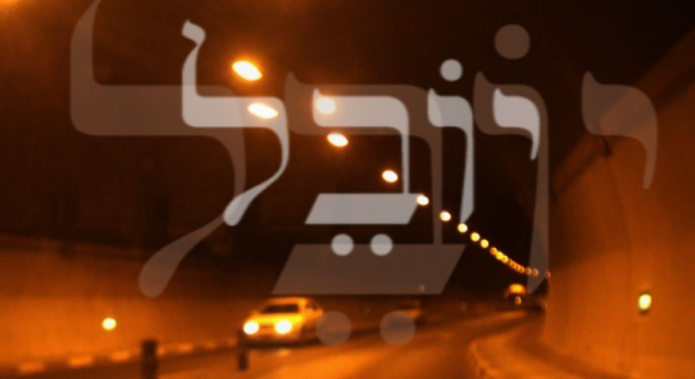
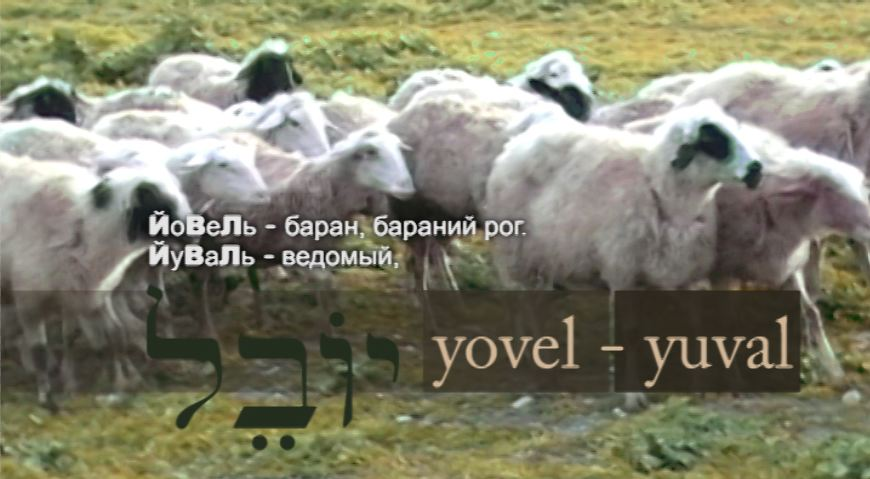
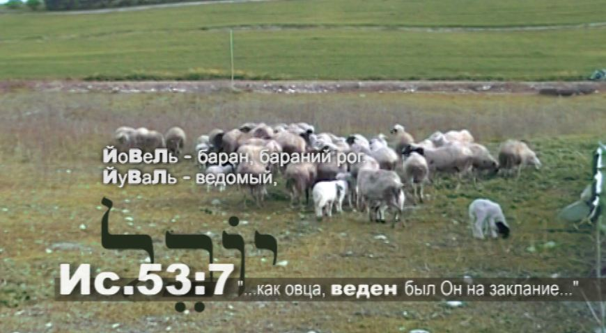
все иллюстрации к статье (кадры из фильма "Голос Шофара") кликабельны.
Пятидесятый год назван годом «ЙОВЕЛЬ», т.е. годом барана или трубления в бараний рог. Год получил своё название от имени шофара – Йовель, которым оглашался. Рог жертвенного животного «ЙОВЕЛЬ» возвещал о великом освобождении, о вхождении в покой, о возвращении каждого в своё наследие.
*
Пророческое действие
Чтобы возвратиться в свое наследие сыны Израиля перешли в пятнадцатом веке от сотворения расступившиеся воды Иордана. Наследуя обетованную землю, им надлежало разрушить стоящую на пути преграду – мощные стены Иерихо. Это событие, стало ключевым не только для еврейской истории, но и для судеб всего человечества. Звук рога Йовель возвестил для них особый период - время благоволения Господа. Входя во врата свободы, они совершали пророческое действие.
Если на Синае шофар трубил с неба, у стен Йерихо, Бог повелевает людям трубить в шофар, облеченным стоять пред Ним коаним - священникам. Сам Израиль становится своего рода рогом ЙОВЕЛЬ, разрушающим преграды, возвещающим освобождение Божье.
*
Образ храма
(Иис.Нав.6:1-10)
2 И сказал Господь Йеhошуа (Иисусу): вот, Я предаю в руки твои Йерихо и царя его, [и] людей сильных;
3 пойдите вокруг города все способные к войне и обходите город однажды [в день]; и это делай шесть дней;
4 и семь коhэнов (священников) пусть несут семь шофаров – йовелей (юбилеев) (היבלים שופרות) пред ковчегом; а в седьмой день обойдите вокруг города семь раз, и коhэны (священники) пусть трубят в шофары (יתקעו בשופרת);
5 когда затрубит керен – йовель (керен юбилейный), когда услышите голос шофара (קול השופר), тогда весь народ пусть воскликнет громким голосом, и стена города обрушится до своего основания, и [весь] народ устремится [в город] каждый с своей стороны.
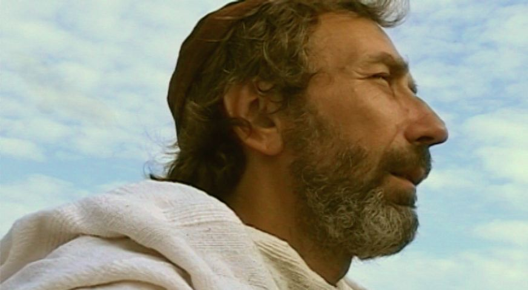
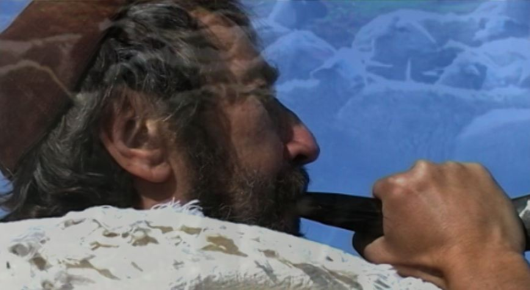
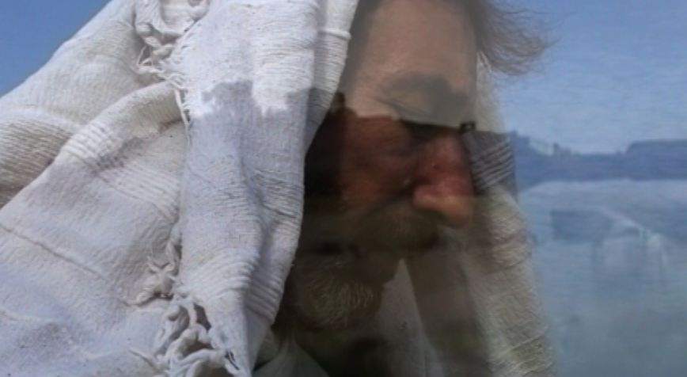
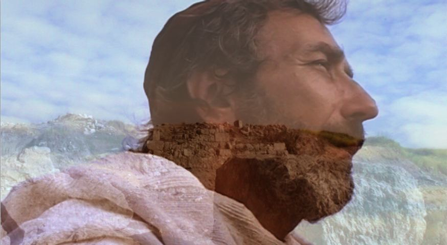
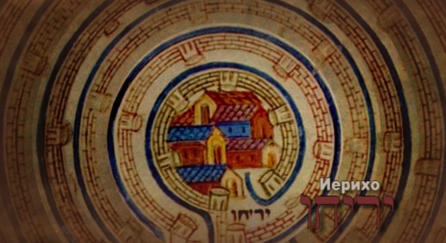
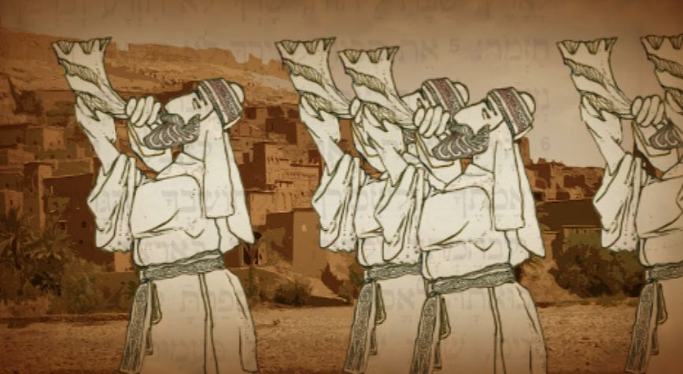
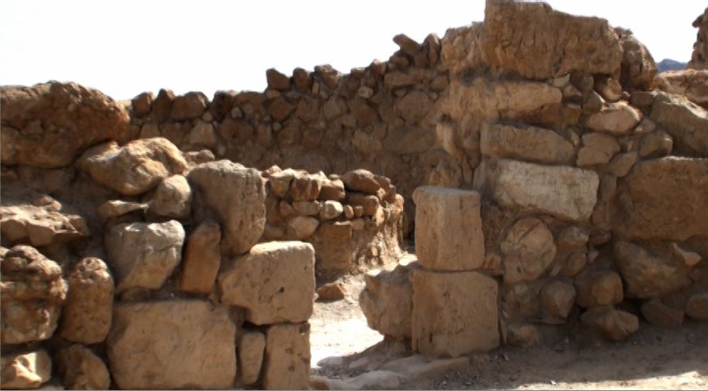
При археологических раскопках были обнаружены стены восьми метровой толщины. Высота стены равнялась ее толщине. Некоторые повествования утверждают, что город Йерихо был окружен семью рядами таких стен. Причем, археологи обнаружили странное обстоятельство: стены обрушились не вовнутрь города, как это бывает при разрушении извне, а напротив – наружу, что доказывает - разрушение этих непреступных стен не было результатом подкопа, или действия тарана.
Они были низвержены от самого основания, и со всех сторон одновременно.
Библия повествует о том, что особую роль во всём этом играл шофар.
И в эпизоде дарования Торы на г.Синай, и у стен Йерихо (синод.: Иерихон) мы читаем о протяжном звуке («мшох йовель»). С иврита это можно перевести, как «блеяние барана». И, если стоя у подножья г. Синай, при заключении завета, сыны Израиля, слышали «блеяние барана» (йовеля) с небес…, то стены Йерихо были разрушены тем же протяжным блеянием барана «Йовель», исходящем от трубления коэнов.
15. И было, на седьмой день встали они рано, с восходом зари, и обошли вокруг города таким же образом семь раз; только в тот день обошли вокруг города семь раз.
16. И было, в седьмой раз священники затрубили в шофары, и Йеошуа сказал народу: кричите, ибо Господь предал вам город!
20. И вскричал народ, и затрубили шофары. И было, как услышал народ звук шофара, закричал народ громким голосом; и распалась стена на месте своем, и вступил народ в город, каждый со своей стороны, и захватили город.
Это была блестящая победа.
Имя «шофар – йовель» имеет потрясающую мощь, которой не может воспротивиться никакое воинство и сила, никакие запоры и неприступные стены.
***
Единственное место в Библии...
Однако в этом эпизоде библейской истории важно видеть нечто большее, чем разрушение твердыни и победоносную военную операцию.
Это единственное место в Библии, где мы встречаем три имени шофара («керен» – «шофар» и «йовель») - одновременно.
Это свидетельствуют об уникальности и важности происходящего. Здесь были явлены сразу три свойства и действия рога:
- «керен» - явление воли и славы Господней - «совершенное призвание».
- «шофар» - улучшение, изменение «совершенное исправление».
- «йовель» - исцеление, восстановление в правах – «совершенная свобода».
Эти шесть дней, когда коhэны трубили, а весь Израиль молча слушал, были временем особого, мистического творения. Это трубление и внимание к нему всего стана производили нечто важное: на земле, во вселенной, в сердце каждого слушающего.
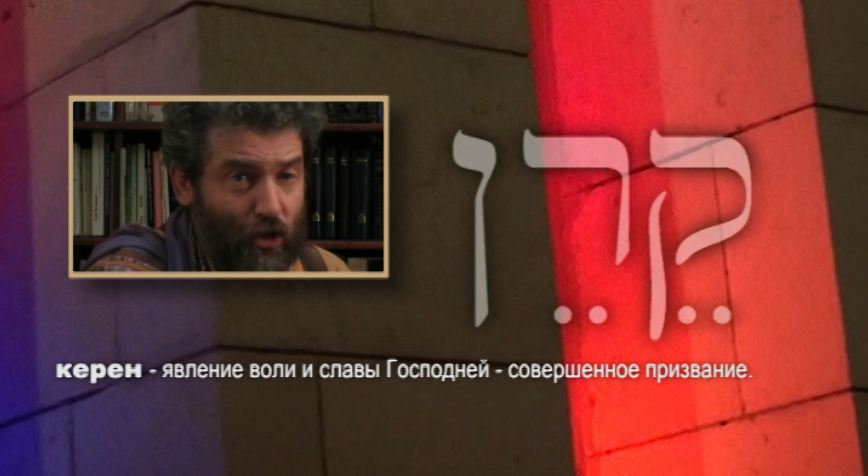
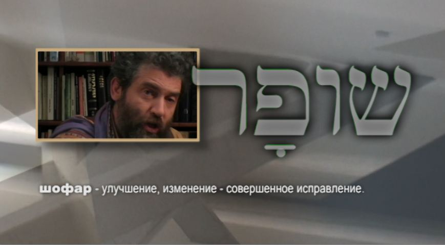
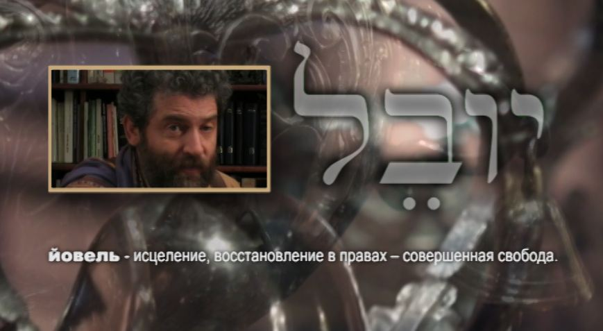
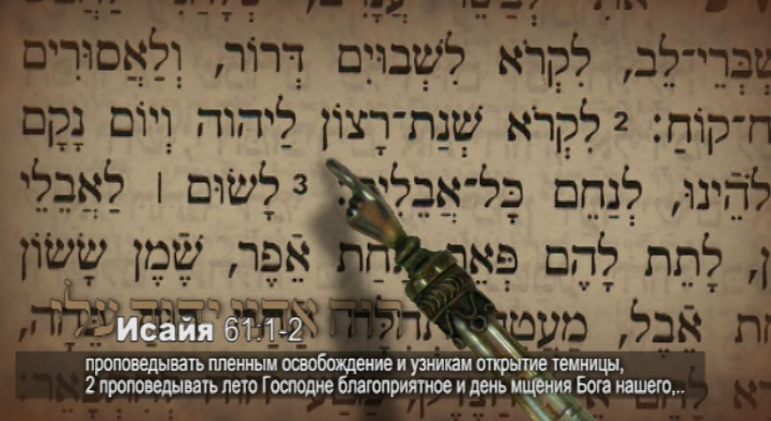
все иллюстрации к статье кликабельны
Эти шесть дней творения были временем устроения, созидания нового уровня отношений Всевышнего со Своим народом.
Бог вводит Израиля в Свой покой, особую священную территорию - Обетованную Землю, являющую собой образ храма.
Он готовит их к священнодействию:
- Сорок лет Он смиряет и очищает их в пустыне,
- У горы Синай заключает завет со всем народом и, как печать того, обрезает всех рождённых в походе.
- Подобно ритуальному омовению священства, погружает их в воды Иордана.
- И было: «Вождь воинства Господня сказал Иhошуа: «сними обувь твою с ног твоих, ибо место, на котором ты стоишь, свято». (И.Нав.5:13-15)
И вот отцы наши стоят при входе в Землю Кнаан, подобно тому, как входят в храм для священнодействия пред Господом. Ведь овладев землей, потомки Авраама должны были войти в особое присутствие Всевышнего.
Израильтяне, шествующее вокруг стен города представляли собой образ живого храма, созидаемого Всевышним из Своего народа на Священной земле, о которой Бог сказал: «Моя земля»).
«Семь коhэнов, несших семь шофаров-йовелей (юбилейных рогов) (שופרות היובלים) пред ковчегом Господним, шли и трубили шофарами; вооруженные же шли впереди их, а идущие позади следовали за ковчегом [завета] Господня, трубя шофарами. (Иис.Нав.6:12)
Это повествование указывает на то, что здесь мы имеем дело не с обычным походным порядком и не с рутинными приготовлениями к овладению Ханааном, но с особенным действием. Необычным в этой ситуации было то, что ковчег Завета несли не левиты, а коhены. Ведь в обычном порядке переносить ковчег – исключительная обязанность левитов. Только им дозволено заниматься перемещением всех частей и принадлежностей Мишкана (скинии). Ответственность же коэнов – предстоять Всевышнему, священнодействуя пред ковчегом Завета.
Таким образом, повеление Бога о том, чтобы именно коhаним (священники) сопровождали и несли на своих плечах ковчег Завета, есть ни что иное, как указание Бога на характер свершаемого Израилем действия – служением священнодействия и поклонения.
- Ковчег является неким центром, погруженным в трубление шофара, подобно Святому Святых в сени херувимов.
- Коаним вместе с ковчегом, окруженные гласом шофара, помещены внутрь колонны шествующих – как Святое Святых помещается в Святом.
- Израильтяне же с иноплеменниками, присоединившимися к их стану, служат подобием дворов Храма.
Подчеркнутое обращение к числу «7» во всей этой ситуации (7 рогов, 7 коэнов, 7 кругов вокруг города в 7-ой день) - указание на совершенное действие, полноту Божью, перспективу особых совершенных отношений Израиля с его Творцом.
Символично и то, что именно 7-ой день, представляющий собой священный символ завета Творца с Израилем, - шаббат, стал днём сокрушения иерихонской твердыни.
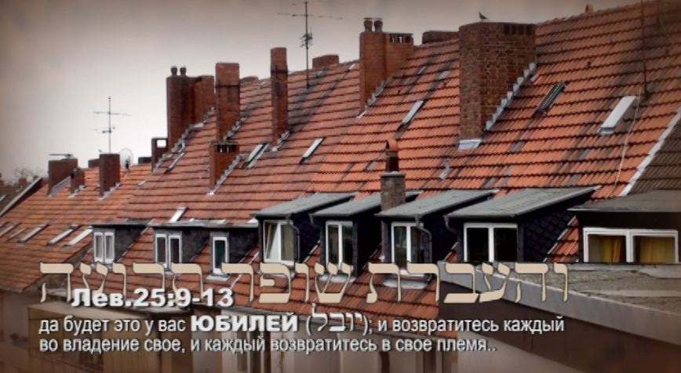
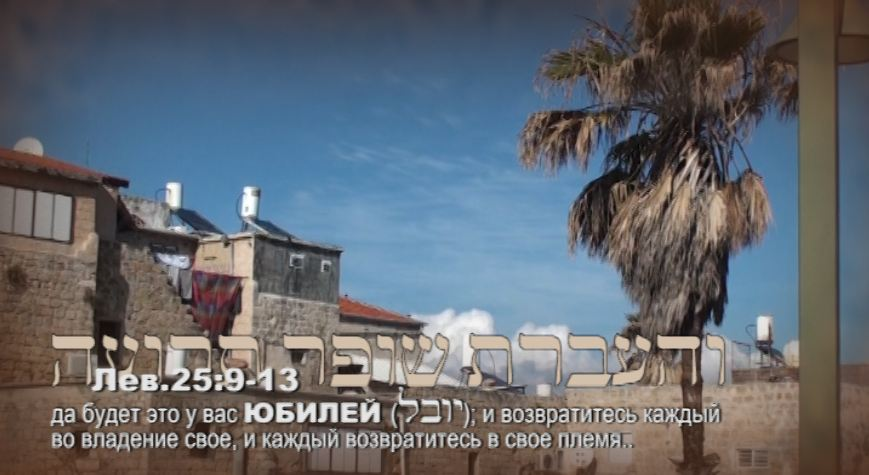
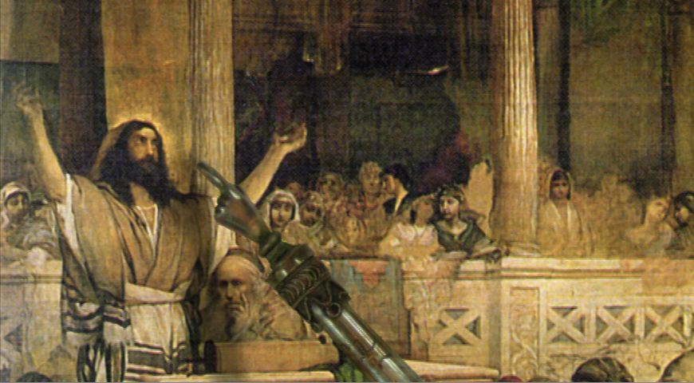
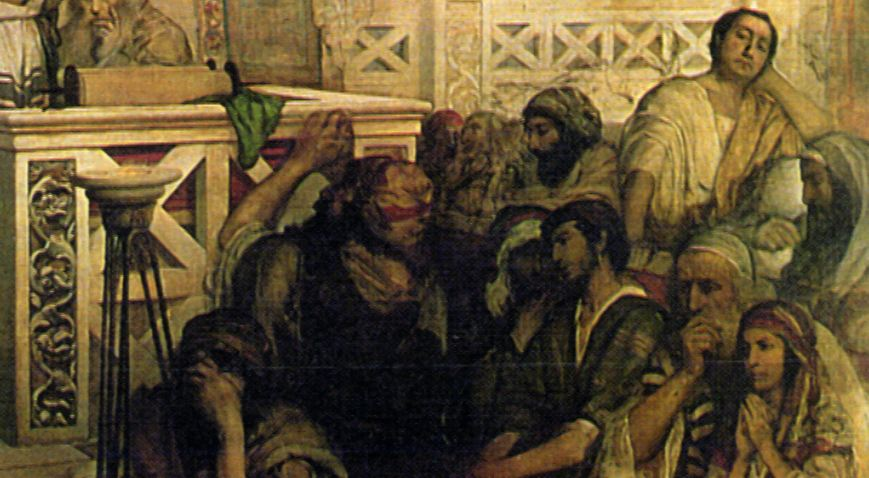
все иллюстрации к статье кликабельны
Год благоволения Господа
Спустя тысяча пятьсот лет со времени падения стен Иерихона и пророческого священнодействия израильтян в «Живом Храме», галилейский Раввин и Учитель, Мессия Иешуа провозглашает, стоя в шаббат (седьмой день) посреди синагоги в Нацерете, величайшее сокрушение оков, твердынь и всякой несвободы, впервые реченное ещё пророком Ишаяу:
Руах адонай алай... «Дух Господень на Мне; ибо Он помазал Меня благовествовать нищим, и послал Меня исцелять сокрушенных сердцем, проповедовать пленным освобождение, слепым прозрение, отпустить измученных на свободу, объявить год благоволения Господа. (Ис.61:1-3).
«И Он свидетельствовал им:
«Ныне исполнилось писание сие, слышанное вами».
Его слова, подобные крику шофара, потрясли, привели в трепет присутствовавших в синагоге. И все сказали на них – «амен». (Лк. 4:21)
В этих словах слышалось эхо Синая. Это звучало подобно сокрушению стен Иерихо, падению преград, разрушению оков.
Юбилей – это Сам Мессия. Только в Нём может быть действительно изменена наша жизнь, только в Нем мы имеем восстановление в наследии, того, что утратили в Эдемском саду.
Говоря, «Ныне исполнилось Писание…», Он возвестил великое освобождение - Шнат- рацон ле-Адонай (год благоволения Господа) – Юбилей (Йовель).
Говоря, «Дух Бога на Мне…, Господь помазал Меня благовествовать», Мессия объявляет: «Я –ЙоВеЛь, возвещающий освобождение». Я – Агнец, ведомый на закланье (ЙуВаЛь), Я –ЙОВЕЛЬ..
см. также другие части на тему "Голос Шофара":
* часть 1
* часть 2
* часть 3
* часть 5
***
см. на эту тему также мой фильм "Голос Шофара". Студия "Тора-Арт". Композитор Даниэль Круглов
***
Другие видео материалы о шофаре: исполнение заповеди трубления шофара - (см. здесь)
автор: Эфраим Калиш /TORAART/